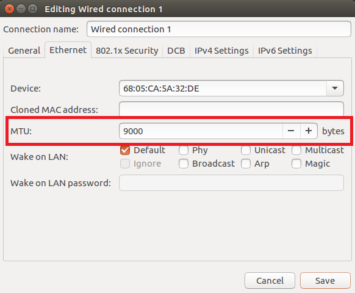
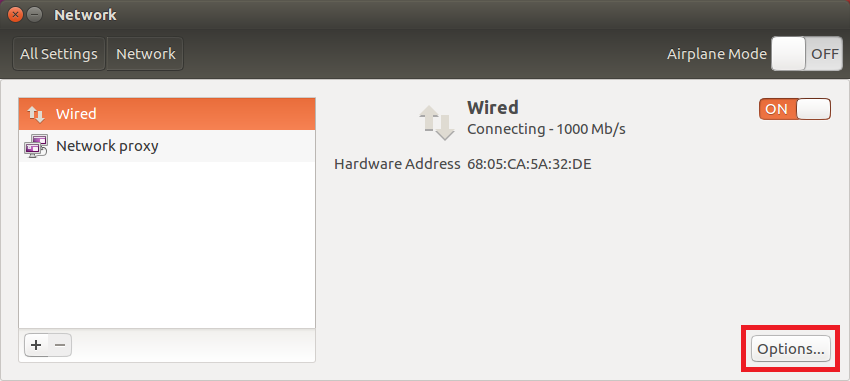
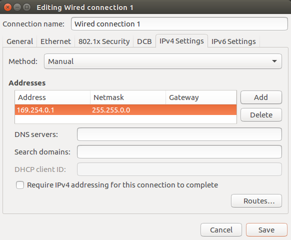

Initial Configuration in Linux¶
Ethernet Adapter Configuration¶
Installing the Ethernet Driver¶
LUCID recommends updating the Ethernet driver on your Ethernet adapter to the latest driver available before connecting your camera. You may need to update your kernel to get the latest version of the Ethernet driver.
Jumbo Frames¶
LUCID recommends enabling jumbo frames on your Ethernet adapter. A jumbo frame is an Ethernet frame that is larger than 1500 bytes. Most Ethernet adapters support jumbo frames, however it is usually turned off by default.
Enabling jumbo frames on the Ethernet adapter allows a packet size of up to 9000 bytes to be set on the camera. The larger packet size will enable optimal performance on high-bandwidth cameras, and it usually reduces CPU load on the host system. Please note in order to set a 9000 byte packet size on the camera, the Ethernet adapter must support a jumbo frame size of 9000 bytes or higher. Jumbo frames can be enabled in your Ethernet adapter’s properties.
Using Ubuntu System Settings -> Network:

Using the terminal:
$ sudo ifconfig enp0s8 mtu 9000
The above command sets enp0s8 to an MTU size of 9000 to enable jumbo frames.
Receive Buffers¶
A receive buffer is the size of system memory that can be used by the Ethernet adapter to receive packets. Some network adapter drivers or the operating system itself may set the receive buffer value to a low value by default, which may result in decreased performance. Increasing the receive buffer size, however, will also result in increased system memory usage. On Linux, you can use the utility ethtool to adjust the receive buffer size.
Using the terminal:
$ sudo ethtool -g enp0s8
Ring parameters for enp0s8:
Pre-set maximums:
RX: 4096
RX Mini: 0
RX Jumbo: 0
TX: 4096
Current hardware settings:
RX: 256
RX Mini: 0
RX Jumbo: 0
TX: 256
$ sudo ethtool -G enp0s8 rx 4096
The above commands query and set the maximum receive buffer size on enp0s8.
| Using your Ethernet adapter’s maximum supported receive buffer size is recommended. |
On most standard Linux installations, the default maximum socket buffer size is a small number which may result in decreased streaming performance. It is also recommended to set the socket buffer size. Using the terminal:
$ sudo sh -c "echo 'net.core.rmem_default=1048576' >> /etc/sysctl.conf"
$ sudo sh -c "echo 'net.core.rmem_max=1048576' >> /etc/sysctl.conf"
$ sudo sysctl -p
The above commands set the socket buffer size to 1 MB.
IP Address Assignment¶
There are three methods used by LUCID cameras to obtain an IP address:
- Persistent - The camera uses a fixed IP address
- Dynamic Host Configuration Protocol (DHCP) - The camera is assigned an address from a DHCP server
- Link-Local Address (LLA) - The camera obtains an address in the Link-Local address range from 169.254.1.0 to 169.254.254.255
Persistent IP and DHCP configurations can be disabled on the camera. Out of the box, persistent IP is disabled and DHCP is enabled. LLA is always enabled.
| A Link-Local address is selected with a pseudo-random number generator, so an LLA address cannot be reliably predicted. If you require a consistent IP address, you should set up a persistent IP on the camera. For more information on Link-Local Address selection, refer to Section 2.1 in RFC 3927. |
| The camera must be on the same subnet as the Ethernet adapter and have a valid IP address before use. | |
{kind=link}
Camera IP Setup¶
Persistent IP and DHCP configurations can be disabled on the camera. The default camera configuration is as follows:
| Persistent IP | Disabled |
| DHCP | Enabled |
| LLA | Enabled (always enabled) |
Out of the box, the camera first attempts to connect using DHCP. If the camera is unable to connect using DHCP, it will use Link-Local addressing.
Reverse Path Filtering¶
Most Linux systems will check whether a packet can be received through the Ethernet interface as configured. A device can be ignored if its IP address conflicts with the Ethernet adapter.
Disabling reverse path filtering skips this check. The following command disables reverse path filtering on enp0s8 and any new Ethernet interfaces:
$ sudo sysctl -w net.ipv4.conf.default.rp_filter=0
$ sudo sysctl -w net.ipv4.conf.all.rp_filter=0
$ sudo sysctl -w net.ipv4.conf.enp0s8.rp_filter=0
The above commands are not retained when the system reboots. You can also permanently disable reverse path filtering by commenting out or removing any lines mentioning the following in /etc/sysctl.d/10-network-security.conf:
net.ipv4.conf.default.rp_filter=1
net.ipv4.conf.all.rp_filter=1
Setting Up Persistent IP or DHCP on the Camera with IP Config Utility¶
Arena SDK provides a simple command-line utility named IP Config Utility to configure your camera’s IP address.
The following command shows all connected cameras:
$ ./IpConfigUtility /list
[index] MAC IP SUBNET GATEWAY IP CONFIG
[0] 1C0FAF000001 169.254.101.0 255.255.0.0 0.0.0.0 DHCP= 1 Persistent Ip= 1 LLA = 1
The following commands show how to enable and set a persistent IP address on a camera with the MAC address of 1C:0F:AF:00:00:01:
$ ./IpConfigUtility /config -m 1C0FAF000001 -p true
$ ./IpConfigUtility /persist -m 1C0FAF000001 -p true -a 192.168.0.10 -s 255.255.0.0 -g 0.0.0.0
The following commands show how to enable persistent IP and set a persistent IP address on a camera listed at index 0:
$ ./IpConfigUtility /config -i 0 -p true
$ ./IpConfigUtility /persist -i 0 -p true -a 192.168.0.10 -s 255.255.0.0 -g 0.0.0.0
The following command shows how to enable DHCP on a camera listed at index 0:
$ ./IpConfigUtility /config -i 0 -d true
The following commands show how to enable persistent IP and DHCP and set a persistent IP address on a camera listed at index 0:
$ ./IpConfigUtility /config -i 0 -p true -d true
$ ./IpConfigUtility /persist -i 0 -p true -a 192.168.0.10 -s 255.255.0.0 -g 0.0.0.0
Forcing an IP Address on the Camera with IP Config Utility¶
The following command shows how to force an IP address on a camera with the MAC address of 1C:0F:AF:00:00:01:
$ ./IpConfigUtility /force -m 1C0FAF000001 -a 192.168.0.10 -s 255.255.0.0 -g 0.0.0.0
Setting Up LLA on the Ethernet Adapter¶
The following steps illustrate an example configuration for one Ethernet adapter to use the LLA space.
Navigate to System -> System Settings -> Network
Click on your Ethernet adapter and click Options
Select the IPv4 Settings tab, choose Manual for Method. In the Addresses heading, click Add and enter the following details:
IP address 169.254.0.1 Subnet mask 255.255.0.0 Gateway, DNS servers, and Search domain details can be left blank.
You can also set up your Ethernet adapter to use the LLA space using the terminal:
$ sudo ifconfig enp0s8 169.254.0.1 netmask 255.255.0.0
The above command sets enp0s8 to the IP address of 169.254.0.1 with the subnet mask 255.255.0.0.